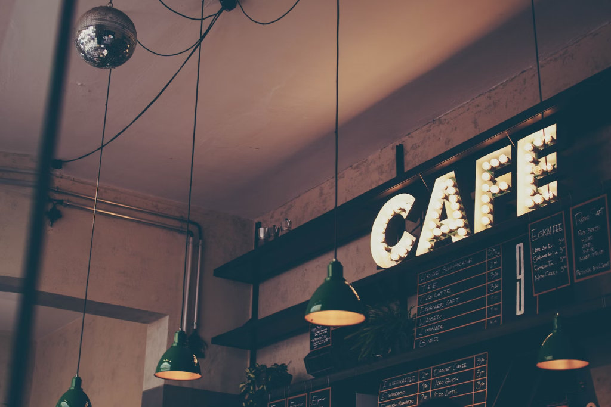

Kopi Susu Sore
Espresso pilihan dengan susu segar dan gula aren asli.
Rp 15.000Nongkrong dan ngafe santai di Pekalongan.

Jam Operasional: Setiap Hari, 13.00 - 18.00 WIB
Lokasi: Jl. Gadjah Mada, Pekalongan.
Hubungi kami melalui WhatsApp Cafe Sore untuk pemesanan.